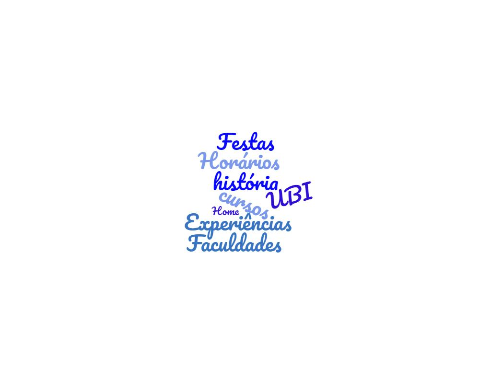
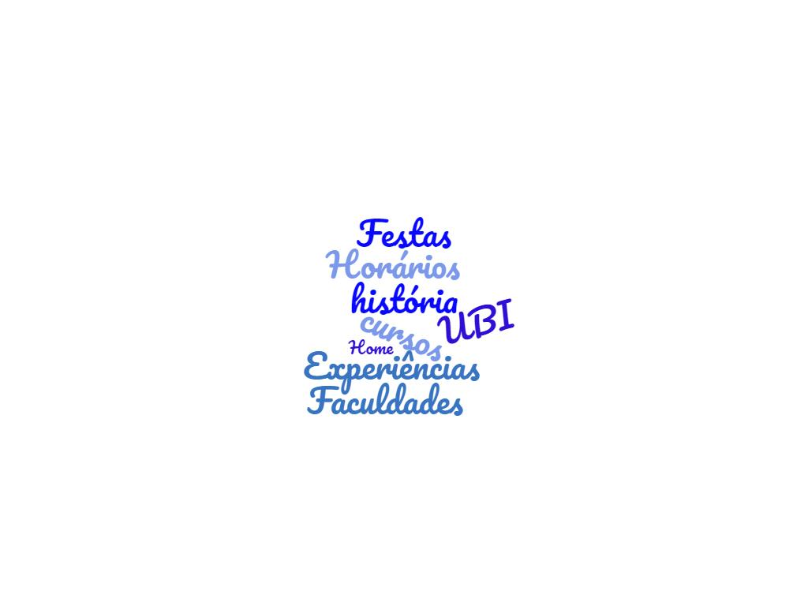

Integra-te UBI

No âmbito da unidade curricular de Composição Web foi nos proposto um projeto. O seu desenvolvimento consistia na criação de um website para um cliente ou em torno de um tópico de interesse, aplicando todos os conhecimentos previamente adquiridos. Como alunos recém-chegados à Universidade da Beira Interior e com ainda muito pouco conhecimento acerca da UBI, surgiu-nos a ideia de desenvolver um site que nos fomentasse a curiosidade acerca da instituição que frequentamos. Assim surgiu o website "Integra-te UBI", cujo intuito é dar conhecer a Universidade da Beira Interior aos futuros estudantes, facilitando a sua integração numa prévia apresentação do que é a UBI. Deste modo o aluno ao chegar acarretará uma série de informação que facilitará a sua chegada.
 
Aqui poderás conhecer um pouco da nossa Universidade, desde a sua história ao teu futuro nesta instituição, dos seus espaços de estudo às suas festas, dos seus departamentos de apoio ao aluno às tuas associações e núcleos de estudantes! E não é apenas isto, porque a UBI é isto e muito mais! O integra-te UBI é um site feito por estudantes para estudantes! E como tal vais encontrar muitas informações em redor das nossas vivências nesta instituição! Esperemos que gostes e escolhas a UBI caso ainda não faças parte dela!